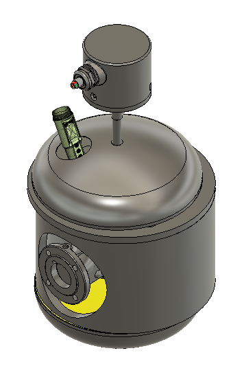
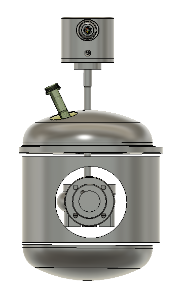
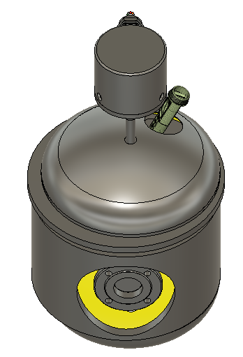
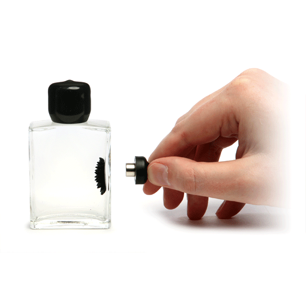
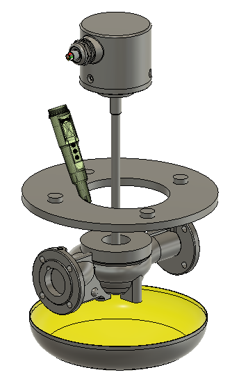
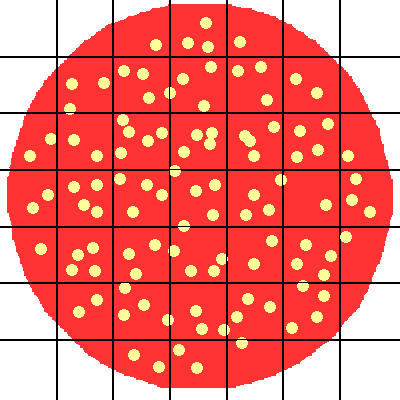

As part of the GEC week we were asked to develop a solution for reducing pollution in Johannesburg, South Africa As drinking water in Johannesburg is contaminated with microplastics, we decided to implement Fionn Ferreira's magnetic separation and scale up the process designing a separation unit.
The Following Images show the Fusion 360 model that I made of the seperator



The seperation method was first introduced by a physicist called Arden Warner who came up with a way to remove oil spills by magnetizing the fluid. Our solution focused for a smaller scaled implementation first as was designed to purify drinking water that was going into public fountains. The separators implemented a PID controller that regulates the inflow of ferrofluids, contaminated water and the outflow. The PID controller would be connected to a probe that would measure the level of contamination of the drinking water. Our seperation implemented a stirrer that would magnetise to attract the ferrofluids and microplastics migrated to the nonpolar phase.

The following seperator removes microplastics from water using a liquid ferro fluid. Once the ferro fluid is added the microplastics will migrate to the oil phase that will be attracted to one side of the seperator using a magnet The water will be extracted from the other side of the magnet and recycled untill the desired purity is achieved

The purity level is measured by the probe that was designed to take pictures of water samples to send to a computer to calculate the number of contaminants using Adobe Photoshop
